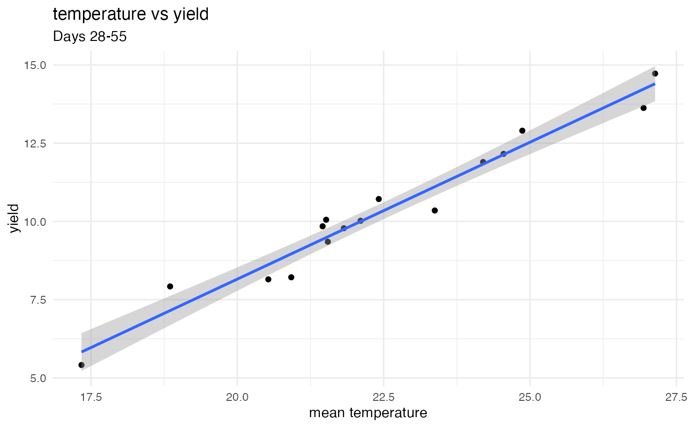

Recalculates one selected environmental-window summary and plots it against an environment-level trait mean. A fitted linear regression is added as a visual aid.
Usage
plot_best_window_scatter(
weather,
traits,
periods,
weather_var,
trait,
start_offset,
end_offset,
summary = "mean",
environment_col = "environment_id",
date_col = "date",
period_start_col = "start_date",
period_end_col = "end_date"
)Arguments
- weather
Daily weather data.
- traits
Phenotype data. Rows are averaged within environment.
- periods
Environment metadata with season start and end dates.
- weather_var
One numeric weather variable.
- trait
One numeric phenotype trait.
- start_offset, end_offset
Selected window offsets relative to season start.
- summary
Summary statistic for the weather variable.
- environment_col, date_col, period_start_col, period_end_col
Input column names.
Examples
dat <- simulate_env_window_data(n_environments = 16, n_days = 100,
signal_start = 30, signal_end = 55)
plot_best_window_scatter(
dat$weather, dat$traits, dat$periods,
weather_var = "temperature", trait = "yield",
start_offset = 28, end_offset = 55
)
#> `geom_smooth()` using formula = 'y ~ x'
